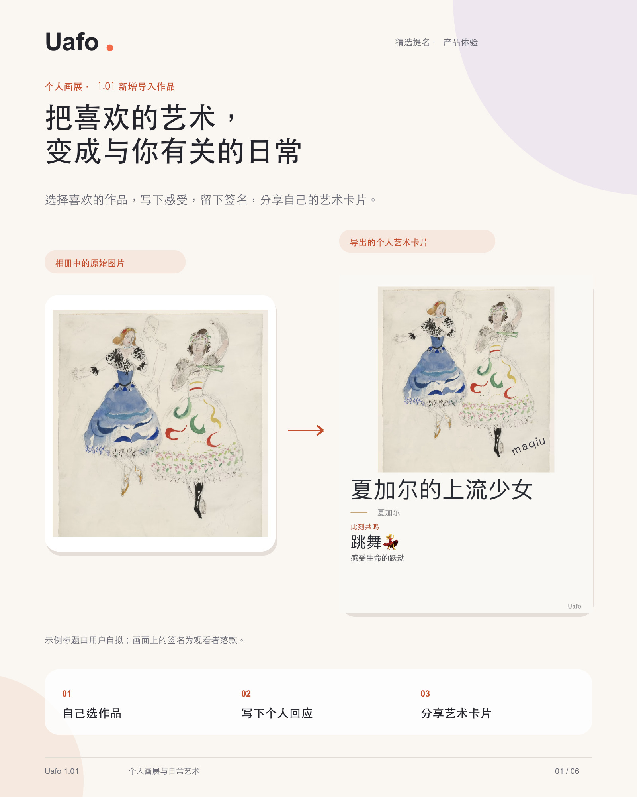
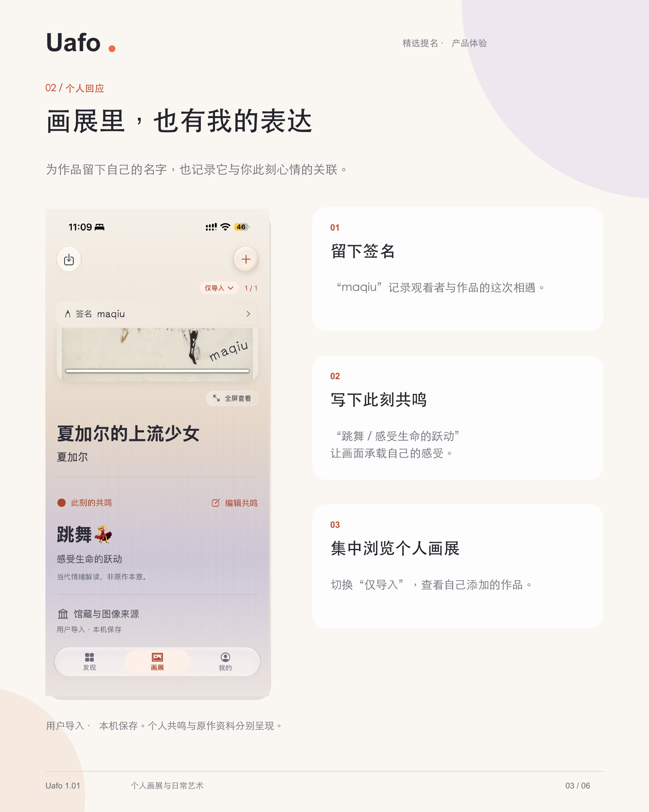
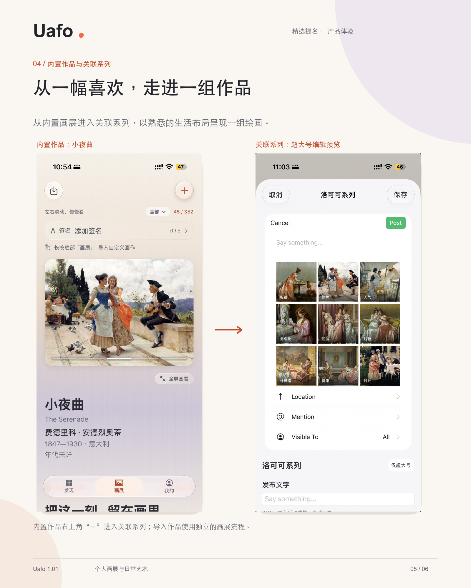

你的画展，由你选择。
1.01 新增相册图片导入。补充作品信息，通过“仅导入”筛选，重访自己添加的作品。
把喜欢的图片加入个人画展，写下感受，留下签名，再分享自己的艺术卡片。一次偶然的发现，也可以留下属于你的回应。
1.01 新增相册图片导入。补充作品信息，通过“仅导入”筛选，重访自己添加的作品。
逐幅写下此刻共鸣，添加个人签名，让作品关联自己的生活和当下心情。
画作、个人文字与落款一起导出，保存或分享，让别人也能看到你的感受。
六张图串起个人画展、艺术卡片与日常陪伴。点击图片可查看大图。



图片和 PDF 均可直接打开，无需登录或申请访问权限。